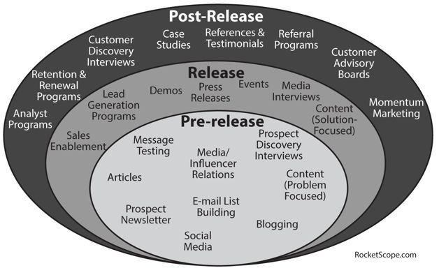

Interview Questions
While not all interview questions fit cleanly into one of the categories below, many do – or at least overlap several categories. Below are the major types of case questions and how to approach them. These types include questions on strategy, marketing, launching, brainstorming, pricing, and problem solving.
For each type of question, a structured approach is vital. Find a way to break down a problem into components and then tackle each part.
Strategy Questions
Strategy questions include asking what a company’s strategy is or how to design a strategy. It’s important to think about a product’s strategy at two levels:
Many products will be strategic on both levels. For example, Amazon Kindle makes money on its own, but it also helps Amazon further secure its position as the go-to place to buy content.
In discussing the micro- and macro- strategy, frameworks such as SWOT and the Five Forces might be particularly useful. Think about questions such as:
Thinking about these questions at the micro and macro level and then applying their actions to it could help you describe a company’s strategy.
Potential strategies for decisions could include:
This list is just to give you a taste of what strategies could be underlying a decision. Many, many more strategies are out there. It might be useful during your interview preparation to keep a list of key strategies you see.
Example
Facebook bought Instagram for about $1 billion, even though Instagram was making no money. Why do you think Facebook did this?
Answering this question does not require a strong knowledge of Instagram. That’s not what the interviewer cares about. A strong answer for someone who doesn’t know much about Instagram might look like the following:
Hmm, interesting question. To be honest, I haven’t really used Instagram much, but I’m vaguely familiar with it. And I’m of course familiar with Facebook. Let me break this down by discussing the key components of the acquisition and then how those aligned with or threatened Facebook’s mission.
Facebook’s mission is to connect people and help them share their lives. This acquisition involved acquiring three things: the company (employees), the product, and the users. Let’s think about these with respect to Facebook.
While I’m sure Instagram had some very talented employees, the company was still pretty small at that time. I can’t imagine that was a strong driver of the $1 billion acquisition.
The product is a bit more interesting. Instagram created a beautiful photo-sharing product, and this was probably pretty scary to Facebook. Photo sharing is really vital to a company whose mission is helping people share their lives; it was a big draw of Facebook and a key strength. But another company was truly excelling there and basically beating Facebook (at least in certain aspects) at its own game. What happens when people start increasingly using Instagram instead of Facebook for photo sharing? It’s a big threat.
The users are the other big part of the acquisition. As I recall, Instagram had a ton of users as of the acquisition and had essentially built its own social network. This is of course what Facebook is all about and, again, Instagram had succeeded there. What happens as their social network grows? Will other companies (particularly creative sites like Etsy) start integrating with Instagram instead of Facebook? The size of Facebook’s user base is the big barrier to entry for competitors, and every social network loosens Facebook’s grip a bit.
Ultimately, it seems like what Facebook might have seen is this hot, young startup which had suddenly started excelling in two areas of strength for Facebook: photos and community. Facebook probably felt they couldn’t afford to risk those areas or even allow another major player there. Plus, there also may have been a fear of what Instagram might do next – or what might happen if, say, Google got their hands on Instagram instead.
This candidate might have missed some aspects of the acquisition (such as an opportunity for Facebook to excel in mobile). That’s an understandable oversight for someone unfamiliar with Instagram or Facebook’s mobile strategy.
Note how the candidate has structured her answer. She’s broken down the acquisition into its components, and then blended in some aspects of a SWOT analysis: strengths, weaknesses, and threats. This is one way the earlier frameworks might be applied.
She then wrapped up her response with a clear, succinct conclusion.
Sample Questions
Marketing Questions
Marketing questions are about product positioning, customers, and handling competition. The Marketing Mix (4 Ps) is particularly useful here in offering an idea of the elements you might discuss. Aspects of SWOT, the 5 Cs, and the Customer Purchase Decision Making Process also come in.
In tackling these questions, you might try an approach like the following:
Note how a good chunk of the response covers just background information. That’s to be expected; the marketing plan should follow from that discussion.
Example Question
How would you market Windows Phone to developers (to encourage them to adopt it)?
Well, let me first think a bit about what the market looks like right now, including the company, competition, customers, and general landscape.
Now for the marketing plan: I think the key things we want to focus on are (1) making development on our platform as frictionless as possible; (2) ensuring the top apps on iPhone and Android also have a Windows Phone version; and (3) finding an opening in the market. Our positioning to developers is that we’ll make it easy to develop, maintain, and sell your app.
This plan is designed to communicate to developers that we have a full ecosystem of tools: tutorials, APIs, technical support, free devices, community, analytics, administration tools, etc. This will differentiate us in the eyes of developers; we’re putting them first to make us the fastest and easiest phone to develop for and support.
This isn’t necessarily the best or only acceptable marketing plan. There are many marketing plans that might be acceptable here—even ones that lead to an entirely different and contrary conclusion.
After all, you aren’t provided with data, so you have to rely on what you know—or think—to be true. If you’re misinformed about something, you could wind up making a recommendation that your interviewer knows would utterly flop. A good interviewer might mark you off a little for the misinformation (since industry knowledge can be important), but should evaluate the rest of your response taking your understanding to be “fact.”
Remember the goal of these questions is showing you can apply structure to an open-ended problem, make good business decisions, and think wisely about a product’s marketing. You can do all of these things even with “bad” information.
Sample Questions
Launching Questions
Launching products is one of the most important duties of a PM, so it makes sense that interviewers would ask how you would do this.
To tackle these questions, the following approach might work well:
Your launch implementation discussion should cover the following aspects, possibly for each phase of launch:
In thinking about these decisions, it might be useful to think about the Customer Purchase Decision Making Process. Which parts will be the most challenging? How will you overcome that?
Some of the possible launch activities are depicted in the below figure2.

Imagine you’re building a service to connect people with a recommendations/booking service for local service providers (plumbers, etc.) – like an OpenTable for service providers. How would you launch this product?
A candidate could respond with an answer like the following.
Okay, just to get this straight, what I’m imagining is a place where people could search for, say, a plumber or an electrician and see reviews. They could probably request an open time slot (if that’s possible) or post a job and get bids.
When I think about this product, it feeds a clear need. I don’t know of other direct competitors to this.
One of the challenges we’ll face – and thus one of the things we’ll need to design our launch around – is that it’s a chicken and egg problem. We have two types of users: service providers and clients. Service providers won’t want to join until there are enough clients, and clients won’t want to join until there are enough service providers.
The other challenge I suspect we’ll face is being top of mind when a user needs a service provider. We’re trying to change user behavior, and that’s always hard.
We want to design our launch to handle these two issues. In fact, given the challenges we’re up against and given the odds that we won’t get things quite right the first time, I think it’s important we launch early with a minimum viable product.
To tackle the first problem, we’ll want to establish a strong user base of service providers first in a focused area (ideally, an affluent area with a lot of homeowners). We’ll do a controlled launch where we can throttle client signup if it gets too high relative to the number of providers.
To tackle the second problem, we’ll need to make ourselves more top of mind. The best way to do this is probably by focusing on services that are more regularly used: housecleaners, drivers, gardeners, pool cleaners, etc.
I think we’ll need to launch, at the minimum, both a web client and mobile client for providers, and one or the other for clients. The providers need both since the mobile client allows them to take bookings on-the-go, and the web will help support providers without phones. For clients, I’d suggest that we start off with a web client. I do think the mobile client is really important, but it requires building for multiple operating systems. Given that we need to get something out ASAP, I think it’s best to just do one for now.
In the months before launch, we’ll start with getting providers signed up. They are less likely to get turned off than clients are by a mismatch in supply or demand for providers.
We’ll pull providers from two places. First, we’ll pull them from review sites such as Yelp and from community blogs and forums. Second, we’ll reach out to real estate agents. They tend to be a go-to place for advice for new homeowners. We want them to know about our product, and we also want their list of recommended providers. An active sales force will be necessary to do this.
For the launch to clients, we’ll do an invite-only, slow launch. We want to incentivize people to invite their friends though, so we may offer some sort of credit to people who invite their friends.
To build buzz, we’ll also want to engage with the local community. We could have physical signage at popular cafes, reach out to local blogs, use Facebook groups about the community, etc. A lot of areas have their own newspapers, so we could try that too.
Post-launch, we want to analyze metrics on signups, conversion, etc. One of the things I expect we’ll find is that many people sign up and then forget to use us when an issue comes up. We will need to track this carefully, as this will be a big challenge for us.
It’s not just a numbers game, though: We really need to build a strong relationship with the service providers. We want them to be advocates for the site. If they can encourage existing clients to use it, then those clients may use it for other services, too. We also need their feedback to enable us to perfect the site.
So, to recap, we’re doing the following: We’ll build a mobile and web client for providers, and just a web client for users. We’ll solicit providers through Yelp, community blogs and forums, and real estate agents, paying particular attention to recurring services such as gardeners and cleaners. We’ll launch in a localized community – Silicon Valley is probably a good candidate – getting as many providers signed up as possible. The service will be gradually rolled out to clients with an invite-only registration. We’ll maintain strong relationships with providers and clients and make it a point to excel in customer service. This will ensure we get the feedback we need to refine our product.
This candidate has recognized that this is really two launches in one: a consumer launch and a provider launch. He has then walked through how to launch in both of those markets and discussed key problems we might face. Finally, he wrapped up with an overview of his overall plan.
Brainstorming questions are about creativity. Interviewers want to see that you aren’t stuck in a mindset of just doing the same old thing. They want to know you can come up with “big, hairy, audacious ideas.”
For some people, this is difficult. They’re scared of looking stupid, or they just get flustered and think too linearly.
If you’re asked a brainstorming question, try to:
Ideally, you want to go for “structured creativity.” Structure shows organized thinking and helps your interviewer remember your answer better. However, don’t let your structure get in the way of your communication.
After you’re done brainstorming, your interviewer might ask you to go into one of your ideas in more detail.
Name some innovative ideas for a vending machine.
There are many ways to respond to this question. Here’s one of them.
Interesting. Let me think for a moment.
Okay, so first, we can use a vending machine to sell things other than the standard food and drinks. We can sell basically any small object. We could use a vending machine to sell beer at a bar, or we could use it to sell small electronics, cosmetics, etc.
It could be used outside of just the standard “sell small object” situation, though.
What a vending machine is good at is distributing exactly one copy of something – without breaking it – in a totally automated way. The automation is interesting because someone doesn’t have to be present. Where else could this be used?
It could be used as an alternative to stores. Perhaps the owners of a small store could use a vending machine as a way to sell a limited amount of their merchandise while they’re closed. They could even use it to speed up the sale of some express items during busy times of the day.
Or, if there were a way of modifying the vending machine so that people could insert items back into it, this could be used to rent things such as phone chargers. The beauty of that is if the person doesn’t return it, you have their credit card on file.
This might even be useful for situations where merchandize is too valuable to leave just sitting out. A lot of stores have pricier items such as razor blades in locked shelves, and customers have to get a clerk to unlock it. If people could just swipe their credit card and pay instantly, it’d be better for everyone.
Okay, let me try to think even more abstractly now. A vending machine has the following attributes or components:
It’s also very heavy and automated.
We could use the glass window to display other types of items – small pieces of art, perhaps. We can use the refrigerator as a normal fridge.
We could also combine some parts. For example, if we had an old vending machine lying around, it could probably be modified to let people withdraw cash from their credit cards.
This ability to locate items at a specific row and column is interesting. Presumably it could also do this for multiple items at once. This sort of automation could be very useful in some industries, particularly when they want to reduce human error. Perhaps for pharmacists or doctors to distribute drugs and know they have the right one.
I think that’s a pretty good list for now. Would you like me to keep going, or is there one particular idea you’d like me to dive into?
This candidate went with a “broadening” approach. The answer started with a pretty straightforward list of use cases for a vending machine, which used the technology in “expected” ways. Then, later, the answer broke down the machine by component and discussed other ways of using those components.
He potentially could have gone even broader. He could have discussed uses for a group of vending machines, or he could have analyzed modifications to the machine that could make it behave in different ways.
Pricing questions are aimed to get you to maximize profit, which is of course the difference between revenue and costs. In an ideal world, we’d have supply and demand charts that express how sales volume would change based on the pricing. We would then be able to pinpoint exactly when profit is maximized.
In the real world, we don’t have any of this data. The goal – to maximize profit – is still the same, but the process is different. People generally use any or all of the following to price a product:
A thorough company might use cost-based pricing, value pricing, and competitive pricing to triangulate on a good price, and then tweak it slightly with experiments.
With these general approaches in mind, there are a number of pricing models to consider:
A pricing model could use a combination of many of these attributes. For example, a company could offer subscriptions to its service, priced differently depending on the size of the customer’s business, with additional upgrades purchased à la carte.
As many tech companies (most notably Google and Facebook) have advertising-based business models, pricing questions around advertising come up particularly often.
Questions about advertising can seem complicated, but actually they usually break down into a handful of standard ratios such as click-through-rate (CTR), cost-per-click (CPC), and conversion rate. Once you start thinking about the problem in terms of those ratios, getting to an answer is usually pretty easy.
You will need to understand the basics of how online advertising works, though. Here’s a quick overview.
Online advertising is generally priced one of two ways:
Google and Facebook offer both pay-per-click and pay-per-impression advertising. Additionally, Facebook offers pay-per-action advertising, with the allowable actions including “liking” a page, claiming an offer, and installing a mobile app.
At Google and Facebook, as well as other companies with advertising, the price of an ad is typically determined via an auction.
Cost-per-click advertising is the type more commonly discussed. The price you pay for each click is called the cost-per-click (CPC). In the auction, you bid based on the CPC you’re willing to spend.
Another key metric is the percent of times your ad is clicked, called the click-through-rate (CTR). To calculate how much you’d pay to have your ad shown one thousand times, a metric called CPM, you can multiply: CPC * CTR * 1,000. For example, if the cost-per-click (CPC) were $1.50, and the click-through-rate (CTR) were 2%, then the CPM would be $30.
Generally, the most an advertiser would be willing to pay for an ad (that is, a click on an ad) is the expected profit from that click. To calculate the expected profit from a click, you want to know what percent of people who click on that advertisement will actually make a purchase (conversion rate). Then, multiply conversion rate * profit per conversion.
max for ad
= expected profit per click
= conversion rate * profit per conversion
If you were asked to calculate how much you would pay for advertising for a particular product, you might need to estimate the conversion rate and the profit per conversion. Conversion rates vary substantially by industry but are usually between 2% and 5% on Google search ads.
How would you price a personalized notebook?
Consider the following response:
Since it’s personalized, I’ll assume this is a premium notebook, probably leather (or faux-leather) bound.
First of all, let me think about who the market is. It feels like the market for this is probably consumers, but it’s possible there’s also some market for companies as a promotional item. Both would be good avenues to discuss.
There are a few different aspects of pricing to consider.
How much do our customers generally spend on gifts? A $20 gift is about the low-end of gift buying, at least for professionals (who are the most likely people to buy this product).
What sort of premium will people pay for personalization? We could survey customers to guess at this, but that’s only somewhat accurate. A 50% - 100% premium seems about right.
How much does it cost us to make it? I have the least visibility into this. However, based on the prices of other products, I’m guessing that it takes at least the cost of the notebook itself, plus the cost of personalization. If a moleskin notebook is sold online for $20, then it’s probably sold to the distributor for a 50% or so markup. The distributor also probably has profit margins of around 50%, so let’s say that a moleskin notebook costs $5 to make. Personalization probably adds another few dollars on top of that.
It feels as though we’re narrowing in on a pricing of about $35 for a nice, personalized notebook.
I suspect there’s a market there for companies as a promotional item with the company logo engraved. We can offer volume discounts on large purchases of the notebook. This would incentivize large sales and offer an alternative to a lot of less classy promotional items.
Volume discounts wouldn’t drop the cost of production of the notebooks (since those were already produced at a discount), but it probably does drop the price of engraving. Our costs are probably around $7, so that gives a lower bound on our price. For high volume sales, a price of $15 seems right; that gives us 50% profit margins. We probably don’t want to go much below this.
The rest of the prices follow roughly from there:
Of course, we’d want to tweak the prices based on data and actual sales. Since it’s an actual physical product without ongoing customers to support, we could change the prices periodically without people getting too angry.”
This candidate has used a variety of approaches to understand what a reasonable price is. She’s evaluated how willing a person would be to pay a particular amount, based on the alternatives. In this case, alternatives include other notebooks, other personalized options, and other gifts in general. She has also validated this price against an estimation of the costs.
Some questions are left wide open: There’s a problem. What would you do?
Tackling these problems starts not with the solution but with the problem. You have to isolate the precise source of the problem, then diagnose the cause, then solve it.
In some cases, you might be ultimately led to an irreconcilable conflict between two paths. For example, suppose you have a question like, “You are launching a photo sharing site and have experimented with a new interface for posting pictures. It increases time spent on the website, but decreases the number of photos shared. What would you do?”
If you must make a choice between two paths, then let the company’s goals be your guide. The goals will vary not only from company to company, but also within the same product at different times. For example, a new startup might value user acquisition the most at first, but then later prioritize revenue.
Depending on the interviewer’s goals, she might conduct this as a back-and-forth exercise, where you ask questions to clarify and she provides answers. Or she might want to see your instincts in general and to see how you would solve the issue in the real world.
Breaking down the problem into components can help you isolate the causes. Some of the common problems and their causes are:
A question like, “How would you figure out why our profit has declined?” could be broken down from profit, to revenue, to sales volume, to new customers, to conversion rate. The key is to isolate the problem.
Once you’ve figured out which variable is actually changing, you then need to diagnose the problem. This could be almost anything, but here are some ideas to get you started:
Once you’ve diagnosed the problem, you might be asked to resolve it. Clarify the goals before you go on to doing this.
Example Question
You are working for Amazon in their clothing category when you discover that the sale of jeans has steadily declined during the past three months. How would you figure out what happened?
You might approach this question as follows:
Interesting. Okay, so the sale volume has dropped. I’ll assume this was a substantial drop. I need to understand more about what happened.
The three month thing is particularly curious. It seems that something happened with jeans, with clothing, with Amazon, with online commerce, or just with time.
I think it’s fair to rule out a big issue with online commerce or Amazon.com. Presumably, if those had experienced major drops, we’d know about it and have bigger issues to worry about. Likewise, let’s rule out a decline in clothing on Amazon since, presumably, we wouldn’t be so concerned about jeans if it were a clothing-wide issue.
The time issue is interesting. Comparing sales to three months ago isn’t necessarily a good idea. Jeans are probably not sold at a steady rate year round. It’d be better to compare the sales to a year earlier to rule out seasonality. Let’s assume, though, that this still reveals an issue.
You’ve also said it’s a steady decline. This means that it’s probably not, for example, a single UI change that caused the issue. That would cause a sudden decline instead.
At this point, I’d like to get an understanding of how the sales have been within the jeans category.
Let’s say it was all jeans on Amazon, but that Zappos did not experience an issue. This isolates the problem to something specific that we did.
Sales volume is a function of visitors and conversion rate. If sales dropped, then one or both of those must have changed.
We could break down both visitors and conversion rate by type of visitor: Amazon search traffic (people searching on Amazon.com), browse traffic (people browsing to get to the right category), external search traffic (search engine traffic, such as from Google), and direct traffic (people going directly to a particular product).
Our goal is to look for which of these experienced a decline either in the number of visitors or in conversion rate. If, for example, external search saw a drop in traffic, then we could investigate what changes we had made that might have affected our pagerank.
If we don’t see a difference within these types of users, then we’ll want to look elsewhere for something that might have impacted sales. For example, it might be that the price of jeans increased substantially. It’s also possible (though hopefully unlikely) that there was an error in the searching/buying process that caused a decline.
This is the basic process I’d go through. Is there a particular aspect you’d like me to drill into further?
This candidate has paid close attention to the wording of the question. It’s a gradual decline across a type of product. This should be a clue to what might be causing the problem.
The candidate has also struck a good balance between outlining a general approach to solve the problem and using appropriate instincts to guide the direction (e.g., it’s unlikely that jeans suddenly stopped selling well).
1 “Startup Metrics for Pirates.” Dave McClure. 8 August, 2007. http://www.slideshare.net/dmc500hats/startup-metrics-for-pirates-long-version
2 “Launching a Startup? Plan Your Marketing Around These 3 Phases.” Dunford, April. 22 July 2013. From http://www.betakit.com/launching-a-startup-plan-your-marketing-around-these-3-phases/